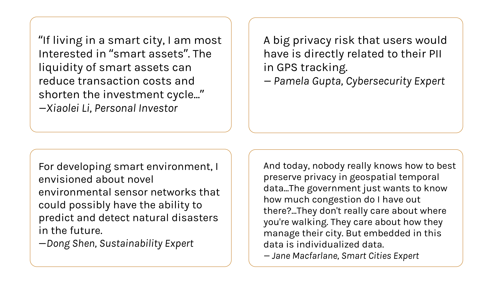
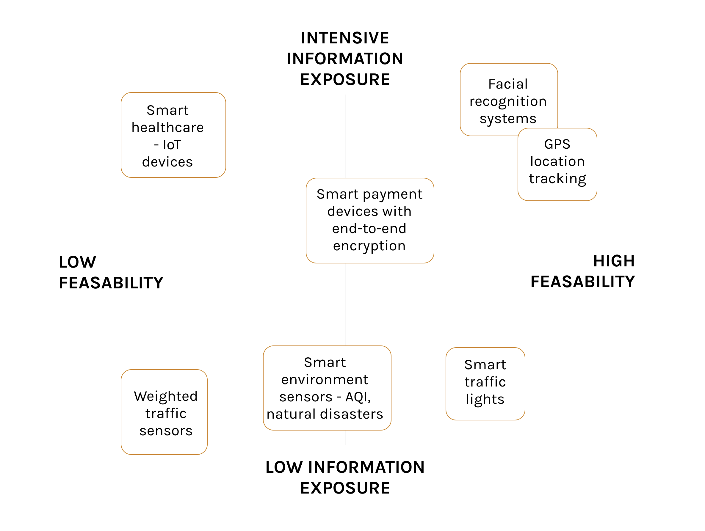
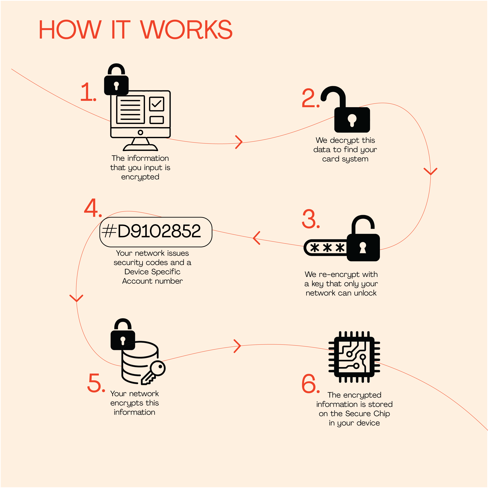
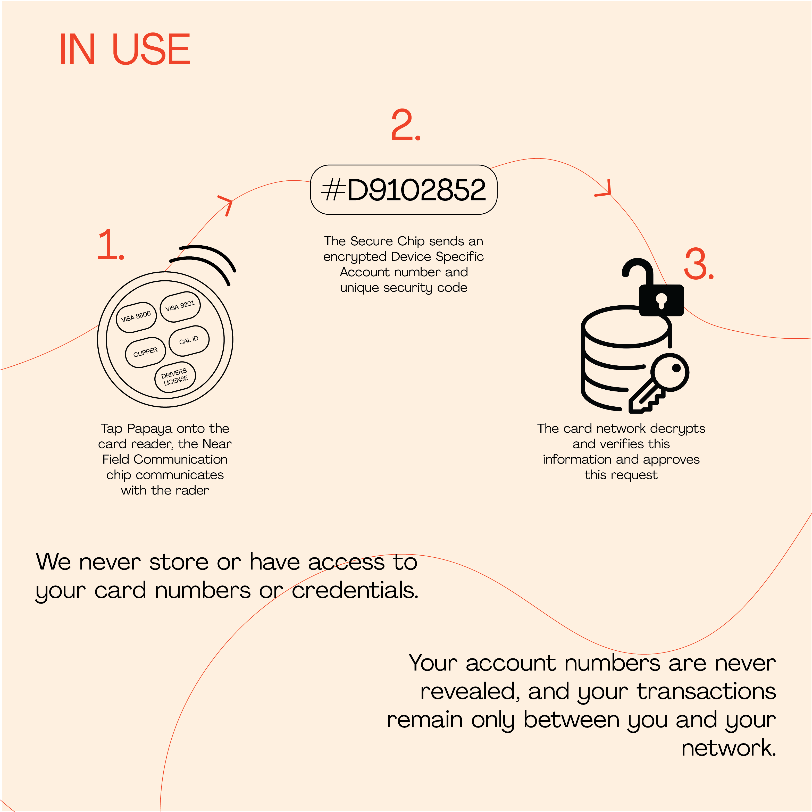
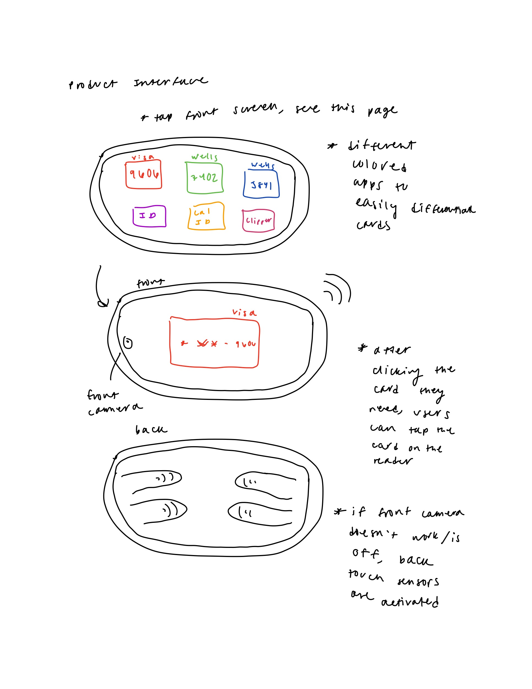
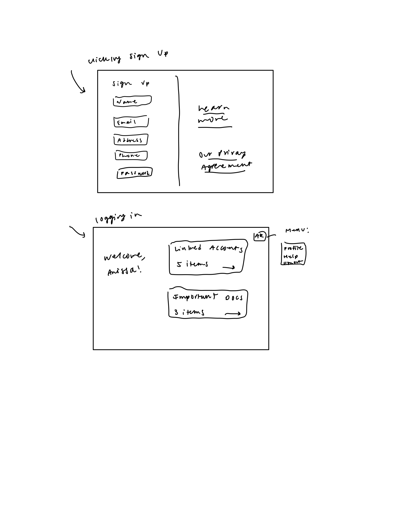
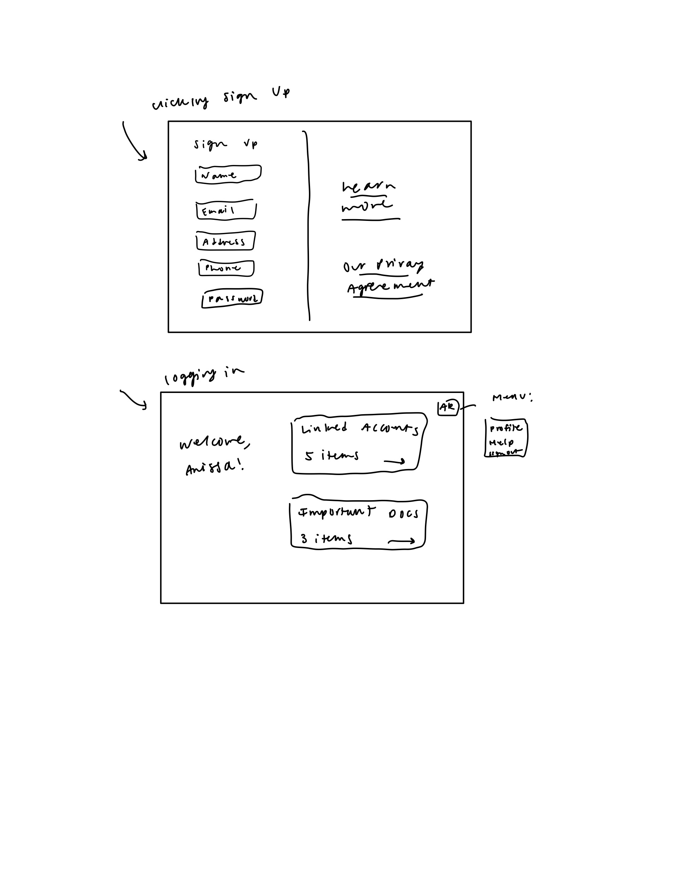

Pinterest Redesign
Papaya is a virtual wallet that allows users to securely store payment cards, identification information, and retail cards. It comes as a suite of products: an app, wallet sized tablet, or keychain.
View our full project here.
Timeline:
October 2020
Tools:
Adobe Illustrator, Adobe Photoshop, Figma
Team:
Individual Project
Background and Context
I have become an avid user of Pinterest because of my position as a Creative Director for my university's arts and fashion publication. The platform has been extremely useful for my team and I, and it has become a central way for me to put together creative inspiration. As a Creative Director, I am responsible for creating a theme that can support four print shoots for each biannual issue that we produce. Pinterest has been the easiest way for me find and group images that materialize our concepts for moodboards and slide decks.
Pinterest has a beautiful design system already, so I did not want to do an entire redesign of Pinterest, and chose to focus on in specific and small features to improve the user's experience.
Research and Key Insights
Research Strategy
1. Product Research
I decided to go through the Pinterest Home Page, Search Page, and Profile with an open mind and take note of its strengths and weaknesses. I also collected Pinterest feedback from reviews on the Apple App Store.
2. User Research
I decided to conduct interviews and observations among a range of Pinterest users, from low to high usage. During these interviews, I also led an observational study where I observed the way users interacted with the interface, noting where weaknesses may lie.
Product Research
After interviews with 5 experts in cybersecurity, sustainability, and blockchain, 3 stakeholders, and 5 end users, we narrowed down our findings to three key insights.

User Research
Using our interviews and background research, we constructed a list of potential features of a smart city and assessed how risky these are in terms of privacy and security.

Redesign Opportunities
1. Transparency
Both end users and experts have emphasized the importance for products and services to be transparent in how they collect and what they do with user data.
2. Trust
Experts believe that products and services need to earn trust through being transparent and communicating the costs and benefits of using a product from both a security and privacy perspective. Users were more likely to trust products that were commonly used among their friends and family, without thinking about the security risks.
3. Convenience
Smart cities are trying to optimize efficiency and improve the quality of life for their residents. Many users have expressed their priority for convenience over security, while experts view security as their top concern.
Ideation
Sketching
We decided to create a payment and identification storage product that can be a mobile application, tablet, or keychain. This is a design solution for the future of smart cities, where all retailers and governments will accept and issue digital forms of payment and identification. Our product distinguishes itself from its competitors because of its commitment to transparency, privacy, and security. Unlike other virtual wallets, users will know exactly how their information is stored and that no thrid party has access to their traffic. We explain the technology to users in a digestible, user-friendly format which makes understanding the importance of cybersecurity easier and more accessible. We also envision this product to be publicly available so that people without smart phones can also make convenient and secure transactions.
 Redesign
Sketching
Sketches for the tablet interface and website wireframe.
 


Working Prototype
The final version of the app.
Reflection
Overall, I'm satisfied with how this project came together. I learned so much about cybersecurity throughout this process, and I gained new design thinking skills by applying methodologies that I hadn't explored before. I believe that our project helps guide cybersecurity awareness and financial literacy for users, and I think it's very important to design with privacy and security in mind as we enter a new age of technology and data collection. If our team had more time, I would've liked to do more usability testing with our medium-fidelity prototypes, and I will continue developing Papaya products and mockups. I feel much more confident with product design and UI/UX design, and I hope to complete more projects like this in the future.